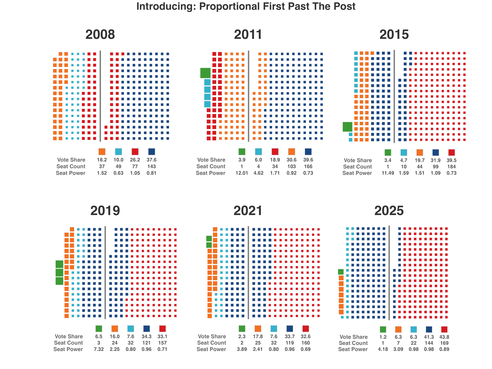

Electoral System Comparison
Drag the slider to compare Current FPTP vs. Proportional FPTP

Current System
Proportional FPTP
💡 Tip: Drag the slider left and right to compare how voting power changes between the current system and the proposed proportional system